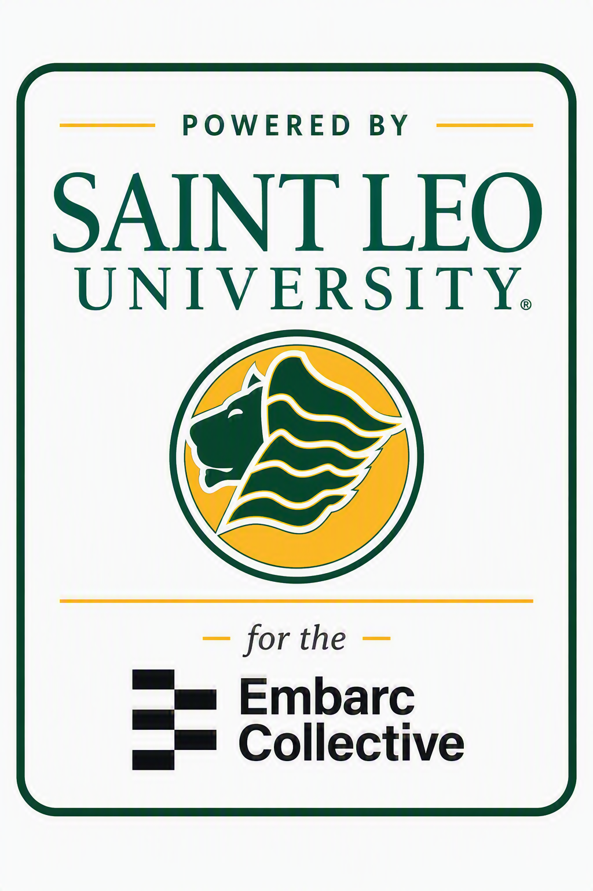

✦
Ideate
Frame the customer, problem, decision, and assumptions.
Output: Challenge BriefUNIVERSITY TALENT × STARTUP MOMENTUM
A functional prototype for founders, students, faculty, and mentors to frame challenges, test assumptions, build solutions, and launch the next experiment.
THE LAB MODEL
Every sprint converts an ambiguous founder question into evidence, a usable deliverable, and a clearly stated next decision.
Frame the customer, problem, decision, and assumptions.
Output: Challenge BriefGather evidence, test assumptions, and expose uncertainty.
Output: Evidence BoardCreate the model, prototype, analysis, or recommendation.
Output: Solution PackagePresent the decision, next experiment, and measures of success.
Output: Decision MemoDEMO WORKSPACE
Repeat usage may be constrained by a weak post-onboarding trigger rather than insufficient initial demand.
All records on this public prototype are fictional demonstration data.
FOUNDER INTAKE
Complete the guided prototype below. Entries remain in the current browser unless you print or clear the draft.
INTERACTIVE TOOL
Adjust sanitized monthly assumptions. The prototype calculates contribution margin, break-even revenue, and cash runway locally in the browser.
SPRINT PORTFOLIO
STUDENT EXPERIENCE
Roles connect academic work to professional artifacts, founder decisions, and documented evidence.
LAB TOOLKIT
IMPACT BY DESIGN
The prototype tracks whether a sprint clarifies a decision, tests a critical assumption, produces a usable artifact, and identifies the next responsible experiment.
CONCEPT PARTNERSHIP
This independent prototype uses fictional project data and is intended to support discussion about a possible Saint Leo University and Embarc Collective Startup Solutions Lab.
